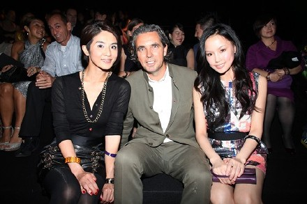
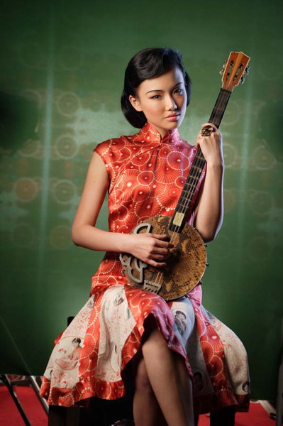
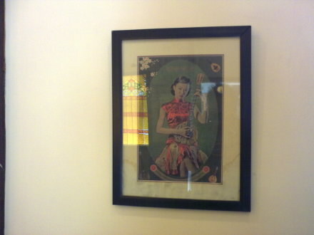
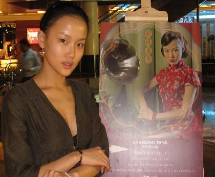
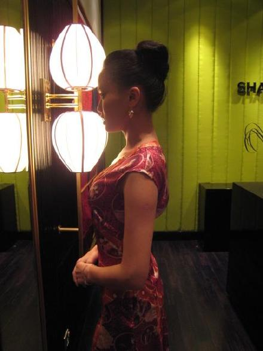
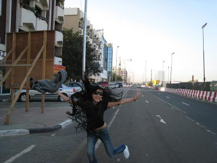
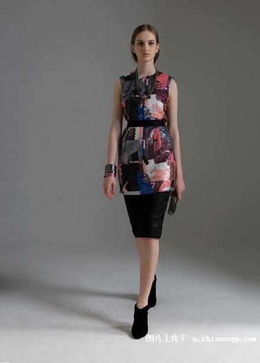
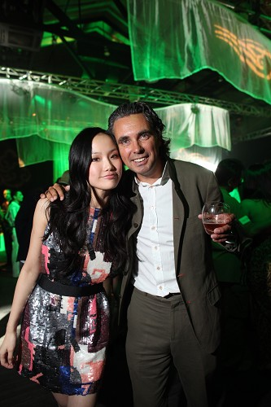

上海滩09秋冬发布会,我和上海滩行政主席雷富逸先生和杨采妮小姐
我和上海滩的缘分来自5年前，那时候刚到天韵,还戴着牙套学唱歌,并未发行专辑,但是就已经成为他们的平面模特,并在筹备专辑的时候翻唱了<夜来香>,作为品牌的宣传歌曲.

未发专辑前拍摄的上海滩宣传照
想想也真是幸运和不可思议.上海滩是香港商人邓永锵创立于1994年的"上海滩" （Shanghai Tang）品牌旗舰店。该品牌于2000年被拥有卡地亚、登喜路、万宝龙、伯爵等品牌的世界第二大名牌集团瑞士Richemont历峰集团收购，是Richemont集团所拥有的顶级中式时装品牌。并在纽约、伦敦、巴黎等地开设了16家专卖店，是当前世界上唯一的以中国地名命名且以中文为标识的国际顶尖时装品牌.正因为这样,他们挑选的模特都是外国的面孔.当然,我觉得如果可以挑选上海女人来演绎,可能会更有味道.后来我拍了一组三四十年代的老上海的照片,我非常的喜欢,我房间一直挂着.老式留声机和电话,旗袍和琵琶,很老上海,很中国.我们的同事去吉士酒家吃饭的时候,还看到他们的墙上挂着这组照片.餐厅老板还给同事们打了折扣.

吉士酒家墙上的装饰画
上海滩的总裁Raphael先生是一位法国人,知道这个消息的时候非常惊讶,认识他以后就更加惊讶,一个法国男人对老上海的事物如此着迷，把上海滩经营的如此成功，他的衬衣，外套，牛在裤，钱包，手表，拖鞋...从头到角都是上海滩，他的太太和孩子们也是穿着上海滩，某中程度上他比我更了解上海,了解上海在世界的位置.在这里不得不感谢上海滩的Raphael先生，在我未出道的时候,就敢让我去很多国际的舞台上唱上海老歌，比如香港/新加坡/菲律宾/迪拜等.
5年前的我和Raphael先生

我的眼角真的没有拉过

这个时候我17岁

我在迪拜张牙舞爪
发片的时候我穿了上海滩漂亮的衣服，前两天去参加了上海滩的09秋冬的发布会，衣服很漂亮,希望全世界的人可以从上海滩慢慢窥探到上海的魅力!


活动当天我穿的这个